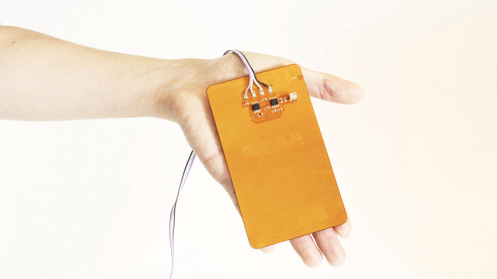

Indirect Skin Contact Electrocardiogram Monitoring System Using Flexible Capacitive Electrodes

It is becoming increasingly important to develop and integrate physiological sensors into automotive applications. In particular, electrocardiogram (ECG) is useful for disease diagnosis and daily health monitoring, including cognitive state monitoring of the driver. In this study, a capacitive ECG monitoring system is implemented that enables ECG acquisition with indirect skin contact. Signal attenuation and noise contamination are considered by installing a flexible electrode, neutralization circuit, AC coupling circuit, Driven Right Leg (DRL), and DSP board in the configuration. The system is evaluated with 5 subjects driving a car in situations where the engine is off and on. The R-wave detection sensitivity of 99.8% and positive predictivity of 100% were obtained while the vehicle engine was running.
Reference
I. Takahashi, K. Yokoyama, and M.Knaflitz, “Indirect Skin Contact Electrocardiogram Monitoring System Using Flexible Capacitive Electrodes,” Forma 32: 19-23, 2017. DOI: 10.5047/forma.2017.s004
横山清子，髙橋一誠, “心拍・呼吸を用いた覚醒度推定とその維持向上のためのフィードバックシステム,” in: 板生清 (Ed.), 生体データ活用の最前線～スマートセンシングによる生体情報計測と応用～, ７章−３節, pp. 1–9. サイエンス＆テクノロジー, 2017.